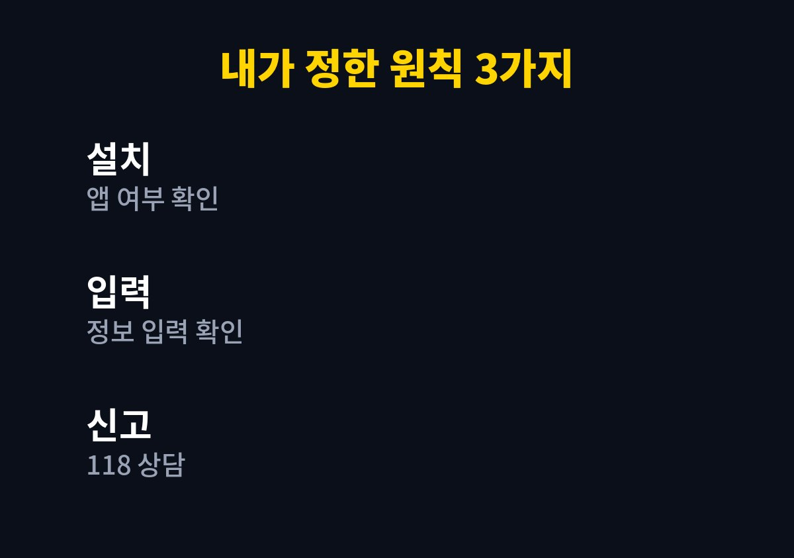
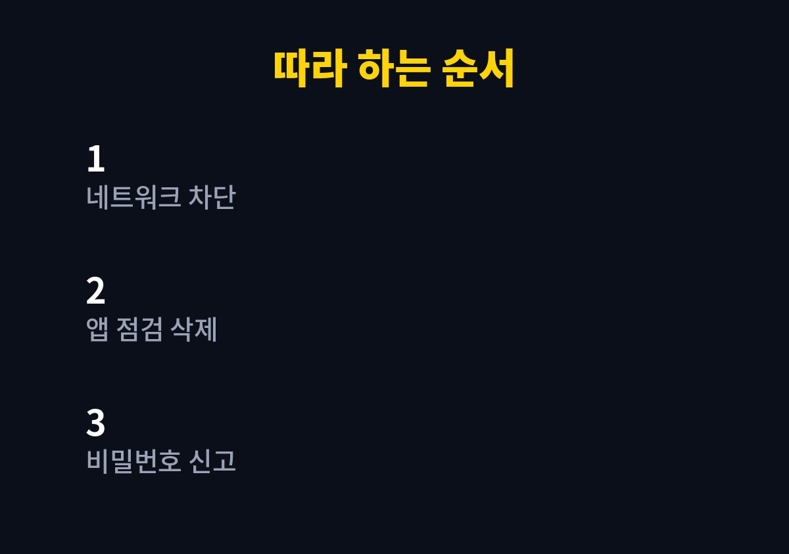

스미싱 문자 링크 눌렀을 때 대처 5단계를 바로 따라 할 수 있게 핵심만 추려 본다. 이 글은 택배나 지원금 문자에 적힌 링크를 무심코 눌러 놓고 가슴이 철렁했던 사람을 위해 쓴 글이다.
나는 온라인 쇼핑몰을 운영하다 보니 택배와 결제 관련 문자를 하루에도 여러 번 받는다.
그만큼 진짜와 가짜가 섞여 들어오기 때문에 눌렀을 때 무엇부터 해야 하는지 순서를 미리 정리해 두었다.
링크를 누르고 나면 폰이 이미 감염된 것 같다는 생각부터 든다.
나 역시 눌러 놓고 한참 화면을 바라본 경험이 있다.
하지만 눌렀다는 사실만으로 모든 것이 끝난 것은 아니다.
중요한 것은 그 뒤에 앱이 설치되었는지, 개인정보를 입력했는지를 차분히 구분하는 일이다.
내 폰에는 쇼핑몰 관리자 앱과 결제 알림, 은행 앱이 함께 들어 있다.
고객 연락처와 주문 정보도 폰 안에 있어서 더 조심하게 된다.
폰 하나가 뚫리면 가게 전체가 흔들릴 수 있다고 생각하니 대처 순서를 외워 둘 필요가 있었다.
바쁜 오전에 택배 문자는 대부분 진짜라고 믿고 열게 된다.
주소가 불분명하다는 택배 문자를 받고 반사적으로 링크를 열어 본 적이 있다.
다행히 앱 설치 화면에서 멈췄고, 개인정보도 입력하지 않았다.
그 순간 식은땀이 났지만 멈춘 덕분에 큰 문제는 피할 수 있었다.
그날 이후로 나는 의심 문자를 받으면 열어 보기 전에 발신 번호와 주소 형태부터 살펴보는 습관이 생겼다.

기준이 있으면 당황한 순간에도 손이 먼저 움직인다.
이 기준은 쇼핑몰 직원들과도 같이 쓰고 있다.
첫째는 앱이 설치되었는지 확인하는 것이다.
눌렀다는 사실보다 무엇을 했는지가 더 중요한 기준이 된다.
둘째는 이름이나 주민번호, 카드 정보를 입력했는지 떠올려 보는 것이다.
셋째는 혼자 해결하려 하지 않고 공식 상담 창구를 이용하는 것이다.
앱도 설치하지 않았고 정보도 입력하지 않았다면 해당 문자를 삭제하고 발신 번호를 차단하는 것으로 시작한다.
그래도 불안하면 보안 점검 기능으로 한 번 검사하는 것이 좋다.
이 정도만 해도 대부분의 불안은 가라앉는다고 느꼈다.
같은 문자를 받았다면 한국인터넷진흥원의 118 상담센터에 신고하는 방법도 있다.
이상한 앱이 설치되었거나 정보를 입력했다면 단계가 달라진다.
이 경우에는 시간이 지날수록 불리해질 수 있어서 서두르는 편이 낫다.
이때는 비밀번호를 폰이 아닌 다른 기기에서 바꾸고, 금융 정보를 입력했다면 해당 금융사에 바로 연락하는 것이 우선이다.
| 상황 | 먼저 할 일 | 연락할 곳 |
|---|---|---|
| 눌렀지만 입력 없음 | 문자 삭제와 번호 차단 | 필요 시 118 |
| 앱이 설치됨 | 앱 삭제와 보안 검사 | 118 상담 |
| 정보를 입력함 | 비밀번호 변경과 금융사 연락 | 금융사와 경찰 신고 |
상황별로 나눠 두면 무엇을 먼저 해야 하는지 한눈에 들어온다.
표의 연락처와 절차는 2026년 11월 기준이며, 상황에 따라 안내가 달라질 수 있다.

1. 데이터와 와이파이를 잠시 끄고 더 이상 링크를 누르지 않는다.
2. 설정의 애플리케이션 목록에서 출처를 모르는 앱이 있는지 확인한다.
3. 모르는 앱이 있다면 삭제하고 보안 검사를 실행한다.
4. 다른 기기에서 주요 계정의 비밀번호를 바꾸고 금융사에 이상 여부를 알린다.
5. 118 상담센터나 경찰의 사이버범죄 신고 창구에 상황을 신고한다.
스미싱은 누구나 한 번쯤 마주칠 수 있는 일이라고 생각한다.
중요한 것은 눌렀다는 자책보다 그다음 행동의 순서다.
나는 이 다섯 단계를 메모장에 적어 두었고, 쇼핑몰 직원에게도 알려 주었다.
나는 이 다섯 단계를 메모해 두었고, 가족에게도 같은 내용을 공유해 두었다.
가족이 같은 문자를 받았을 때도 이 순서를 그대로 알려 줄 수 있다.
의심스러운 문자는 열지 않는 것이 가장 좋고, 이미 열었다면 늦기 전에 이 순서대로 점검하면 된다.
※ 2026년 기준 개인 사용 경험과 공식 발표를 바탕으로 정리한 글이며, 기기·앱 버전에 따라 메뉴 이름이 다를 수 있다.